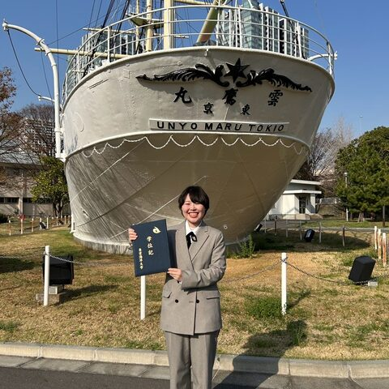

Ruka Kobayashi
Trinet Corporation · Japan
Web application development and prompt engineering. Built an LLM tool for nursing discharge summaries that uses structured XML output to auto-fill template fields. New to bioinformatics and currently learning it, hoping to explore it hands-on with teammates from the life sciences.
Topics: LLM/AI, Web dev, Clinical
Codes in: Python